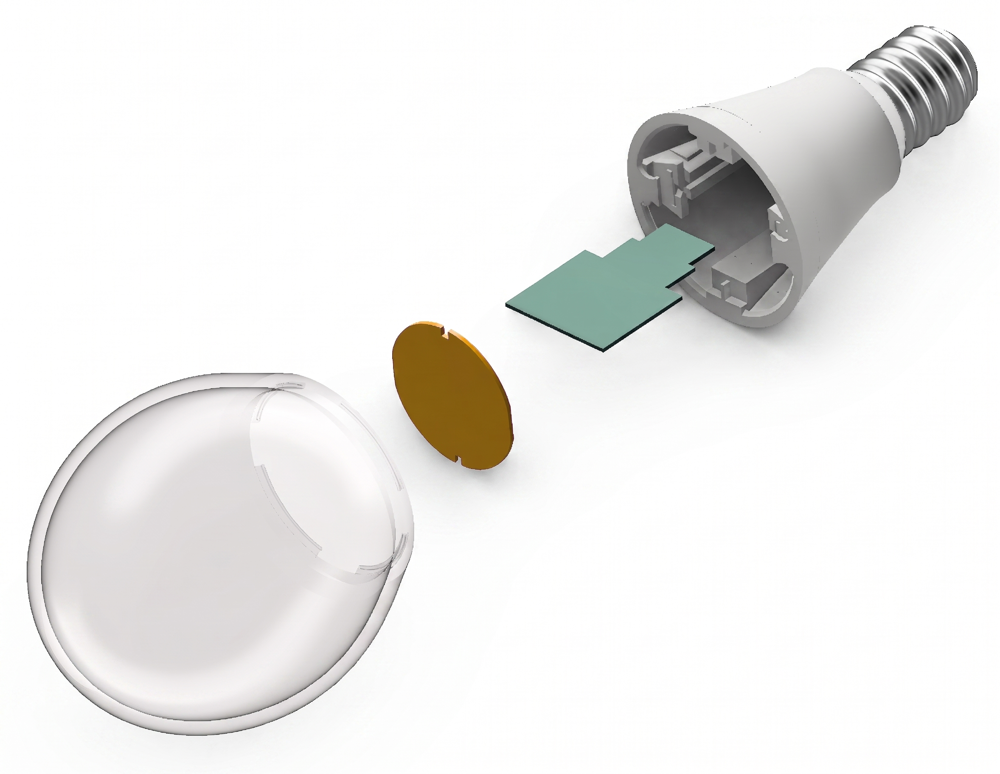
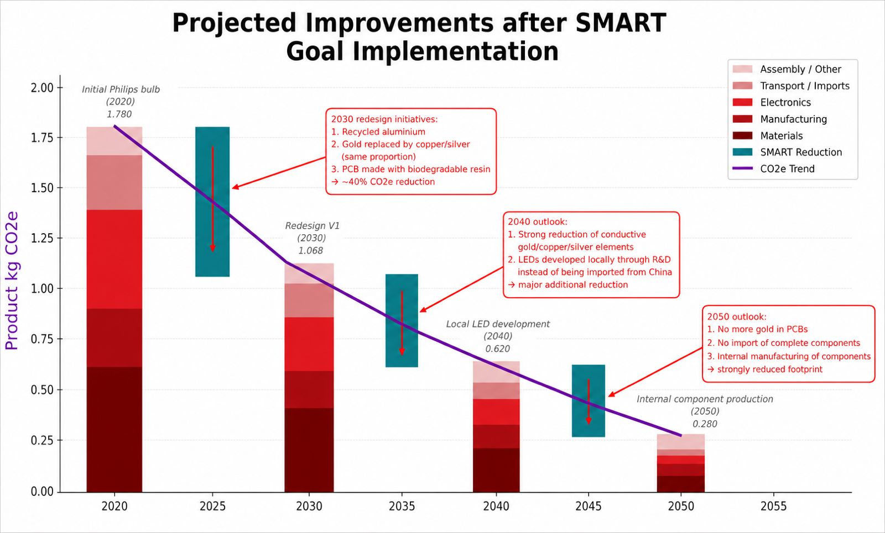

LumiNova – Circular & Repairable LED Light Bulb
Redesign of a conventional LED light bulb into a modular, repairable and lower-impact product, combining design for disassembly, life cycle assessment, material circularity and circular supply-chain strategies.

Project Overview
LumiNova was developed as a circular alternative to conventional LED light bulbs, which are generally sealed, difficult to repair and discarded entirely when a single electronic component fails. The project focused on rethinking both the product architecture and the associated material and recovery systems.
The redesigned concept combines a snap-fit, glue-free architecture, replaceable LED and driver modules, an integrated failure-detection system, recycled metals, a biodegradable PCB substrate and dedicated take-back loops. The redesign was evaluated through CAD, structural validation, material flow analysis, life cycle assessment, cost modelling and long-term decarbonisation targets.
Circular Product Redesign
The central design decision was to replace the conventional permanently bonded structure with a modular architecture. The diffuser, LED board, driver PCB and structural support can be separated, allowing only the failed module to be replaced rather than the complete bulb.
- Snap-fit, glue-free assembly for tool-free disassembly
- Replaceable LED board and driver PCB
- Integrated fault detection to identify the failed module
- Dedicated return and recycling streams for PCB and aluminium components
Material Strategy
The material hotspot analysis identified primary aluminium, PCB materials, gold finishes, GaN and other electronic materials as important contributors to upstream impacts. The redesign therefore combines lower-carbon material choices with longer product lifetime.
- Recycled aluminium for the shell and structural metal parts
- Biodegradable resin as an alternative to conventional FR4 epoxy systems
- Strong reduction of gold use and long-term transition toward gold-free PCB finishes
- Product lifetime extended from 15,000 to 60,000 hours through modular replacement
Main Results
The life cycle assessment showed that LumiNova reduces total climate-change impact from 7.21 to 5.01 kg CO₂-eq over the selected functional unit. The largest improvement occurs in the production phase, where recycled materials and component-level replacement reduce the need for repeated manufacturing.
Circularity also improves strongly. The Material Circularity Indicator rises from 24.1% for the conventional bulb to 70.6% for LumiNova, mainly because the modular architecture allows structural components to remain in use over several replacement cycles.
Life Cycle Assessment
The comparative LCA was performed in SimaPro using ecoinvent datasets and identical lighting service for both products. Scope 3 upstream emissions dominate the product footprint, mainly due to raw-material extraction, electronics manufacturing and assembly.
This result shows that the strongest circularity lever is not only use-phase efficiency, but also avoiding unnecessary replacement of functional components and reducing demand for virgin high-impact materials.
Long-Term Roadmap
A phased roadmap was developed to progressively decarbonise the product through material substitution, improved recovery and localised production.
- 2030: modular design, recycled aluminium, biodegradable PCB resin and major gold reduction
- 2040: larger recycled content, stronger metal recovery and local PCB pilot production
- 2050: full local PCB and LED fabrication with complete elimination of gold
Image Gallery


